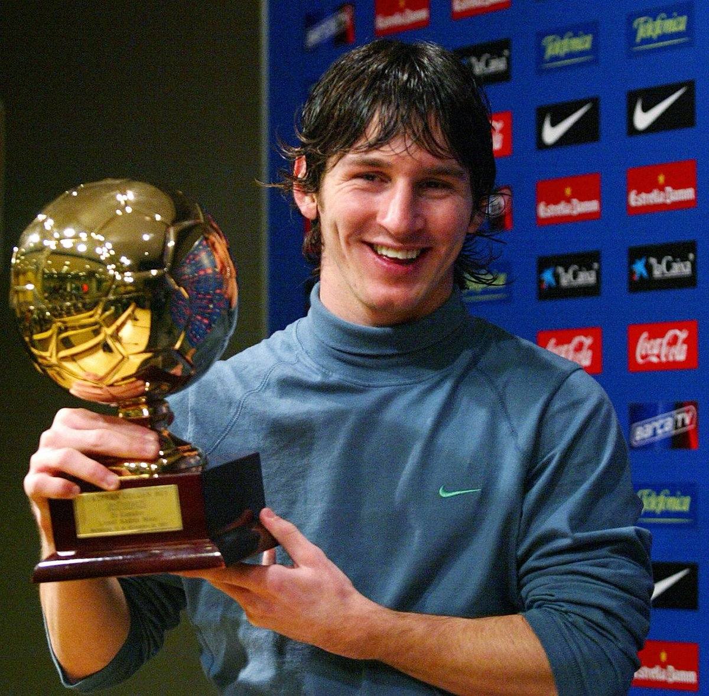

Lionel Messi

Carreira
Formação e todos os clubes nos quais já atuou
- Newell's Old Boys (Base);
- Barcelona B (Base);
- Barcelona (Profissional);
- Paris Saint-Germain;
- Argentina (Seleção).
Estatistícas gerais
Por clubes e seleção
- 1012 Jogos;
- Cerca de 800 Gols;
- Cerca de 300 Assistências;
- 7x eleito como O Melhor Jogador do Mundo (The Best);
- 41 Títulos.
Premiações individuais
- Golden Boy (2005)
- Premiação destinada para o melhor jogador com idade inferior aos 21 anos, jogando no continente europeu.
- 
- Ballon d'Or (7x eleito)
- O Ballon d'Or é uma premiação destinada ao Melhor Jogador do Mundo. Essa premiação é organizada pela revista francesa France Football.

- Chuteira de Ouro (UEFA)
- A Chuteira de Ouro é uma premiação entregue ao artilheiro dos campeonatos de todos os países associados a UEFA.

Titulos e gols:
- Os primeiros gols de Messi (Por clubes e seleção)
- Os primeiros títulos do Messi (Por clubes e seleção)
- Barcelona: La Liga 2004/05;
- PSG: Ligue 1;
- Seleção Argentina: Copa América.